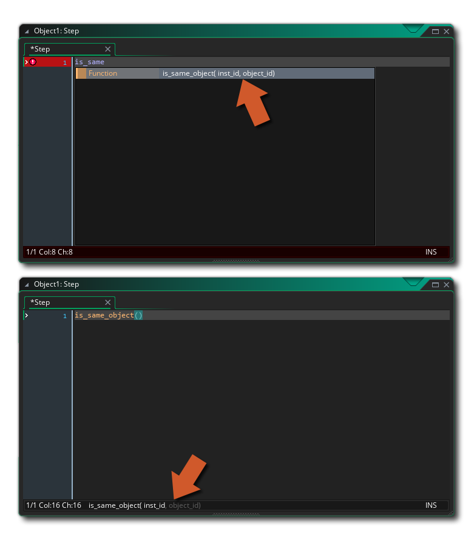
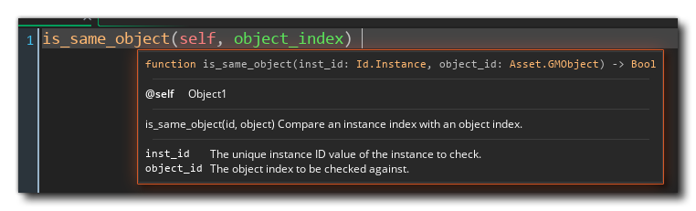

如果你希望你的自定义函数有代码自动完成功能，并在代码编辑器中以特定的方式显示所需的参数，那么你需要添加一些JSDoc风格的注释。这些注释是用来告诉自动完成功能应该如何在脚本编辑器中使用和填写该函数。
一个典型的函数头的格式是：函数名称，函数描述，然后是函数接受的不同参数（参数）的列表，确保每一行以三个反斜线 "///" 开始，因为这告诉GameMaker将注释解析为JSDoc风格。你也可以用 /**... 来包装你的JSDoc注释。*/ /** ，并将其放在自己的行中。
评论本身需要被赋予一个标识符（前面是"@"）和内容，可用的标识符如下。
| 识别器 | 内容 | 语法 |
|---|---|---|
| @function / @func | 完整的函数名称，包括参数 | @func my_func(args) |
| @description / @desc | 对该功能的一般描述 | @desc <Description goes> |
| @param / / / @parameter @arg @argument | 关于参数的信息，有一个可选的 type | @param {type} name <Parameter description> |
| @return / @returns | 该函数返回的数据类型 | @return {type} <Return description> |
| 只有羽毛 | ||
| @url | URL for the function, opens when you press F1 on the function name or use the RMB -> Go To Declaration option. | @url https://... |
| @pure | 将该函数标记为纯函数 | @pure |
| @ignore | 将函数从Feather的自动完成中隐藏起来 | @ignore |
| @deprecated | 将该函数标记为已废弃 | @deprecated |
| @context / @self | 设置函数的上下文，Feather自动完成使用它来提供上下文信息。可以是一个object ，也可以是一个构造器。 | @self <object> |
| Legacy Code Editor only | ||
| @function / @func | The full function name including arguments | @func my_func(args) |
如果你没有为你的参数或返回值指定一个类型，并且你正在使用Feather，它将根据你的函数体自动为它们假设一个数据类型。
见 @param 和 @return 关于Feather数据类型的信息。
为了了解在编写你自己的函数时如何工作，让我们来看看这个基本的例子。
function is_same_object(_id, _obj)
{
if (_id.object_index == _obj)
{
return true;
}
else return false;
}
script 这个object ，只是检查一个实例是否与给定的 object_index ，并且会被简单地调用为。
if is_same_object(id, obj_Player)
{
instance_destroy()
}
然而，将其写入代码编辑器会直接显示参数变量名(_id 和 _obj)，在大多数情况下，这不是很有描述性。你可以使用JSDoc来定义自定义的参数名称和描述，同时也可以定义函数的信息。
/// @function is_same_object(inst_id, object_id)
/// @description Check if the given instance belongs to the given object.
/// @param {Id.Instance} inst_id The unique instance ID value of the instance to check.
/// @param {Asset.GMObject} object_id The object index to be checked against.
/// @return {Bool}
function is_same_object(_inst_id, _object_id)
{
return _inst_id.object_index == _object_id;
}
现在，当在你项目的任何地方调用这个函数时，你会看到在JSDoc注释中输入的新参数名称。
在上面的图片中，上面的部分显示了自动完成中的功能，下面的部分显示了底部的参数帮助器是如何工作的。请注意， @param 中可选的 "类型 "和必须的 "描述 "部分，在IDE 代码完成中默认不显示，要看到它们，你必须激活GML偏好中的选项。
在使用Feather时，当你把鼠标悬停在该功能上时，你会看到关于该功能的详细信息。
你可以用 [] 大括号包住一个参数名，表示它是可选的。然后，代码编辑器将期望在最小需要的参数和参数总数之间有任何数量的参数。
例如，请看以下函数。
/// @function animate_position(end_x, end_y, start_x, start_y)
/// @desc Animates the instance to ending point, from optional starting point
/// @arg end_x
/// @arg end_y
/// @arg [start_x]
/// @arg [start_y]
function animate_position (x1, y1, x2, y2)
{
// Function code
}
start_x 和 start_y 参数被标记为可选的，这意味着代码编辑器现在会期望有2到4个参数，在警告信息中可以看到。

注意如果你在函数声明中使用可选的参数，你会得到同样的行为。更多信息请参见脚本函数。
由于scripts ，其中可以有多个函数，你可以在其声明之前为每个函数添加JSDoc注释。
